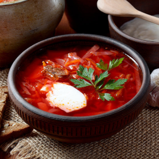

<mat-card class="recipe-short-container">
  
  <div class="recipe-description">
    <h2>{{ recipe.title | capitalize }}</h2>
    <p>
      {{ recipe.description | capitalize }}
    </p>
  </div>
  <div class="recipe-rating-favorites">
    <div class="rating-container">
      <mat-icon>stars</mat-icon>
      <span>4.5 / 5</span>
    </div>
    <div
      class="like-container"
      mat-button
      *ngIf="isAuth()"
      (click)="likeToggle()"
    >
      <mat-icon *ngIf="liked" (click)="deleteFromFavorites()"
        >favorite</mat-icon
      >
      <mat-icon *ngIf="!liked" (click)="addToFavorites()"
        >favorite_border</mat-icon
      >
    </div>
  </div>
  <button
    class="info-btn"
    mat-stroked-button
    routerLink="/recipe"
    *ngIf="moreInfo"
    (click)="openRecipe()"
  >
    <span>View!</span>
  </button>
</mat-card>
